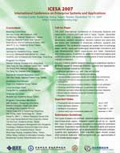

Created at Wednesday, 22 August 2007 19:24 Last Updated on Thursday, 06 January 2011 23:55
Written by webmaster
Notification of acceptance extended to October 15.
The ICESA 2007 (International Conference on Enterprise Systems and Applications 2007) provides a forum for the presentation of research and development covering all aspects of enterprise systems and applications, which are essential to efficient and flexible business operation today. It intends to provide a forum for researchers, developers, vendors, educators, decision makers and users who are active and interested in enterprise software, systems and applications. The conference program will enable them to exchange ideas, identify needs and challenges, disseminate innovations and new developments, report experiences and foster interactions and collaborations. In addition to sessions of technical papers and panel discussions, the conference also plans to have tutorials and industry exhibitions.